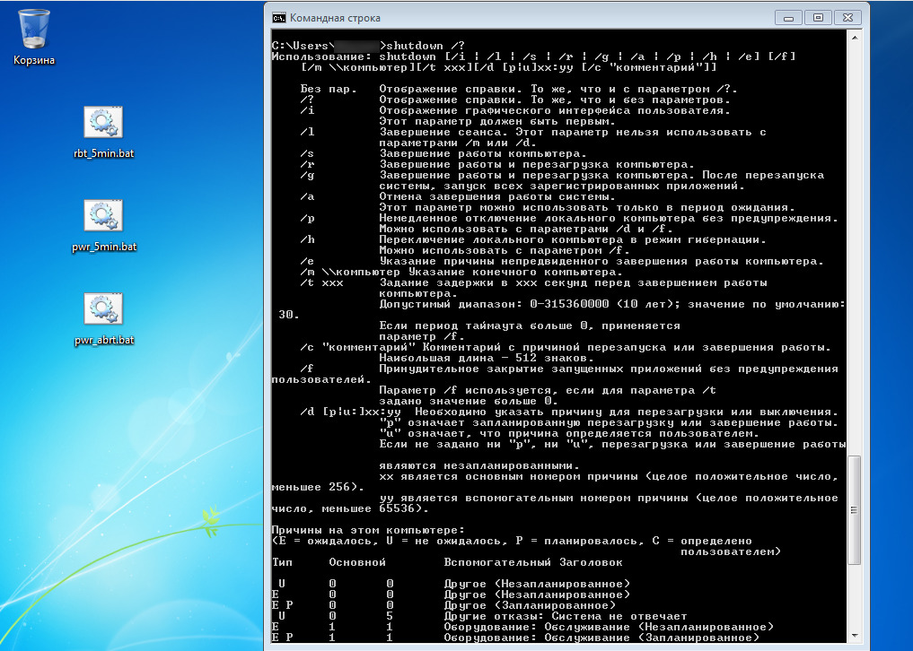
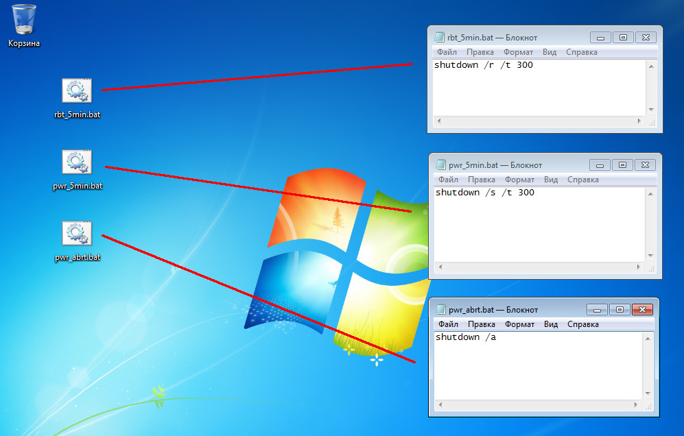
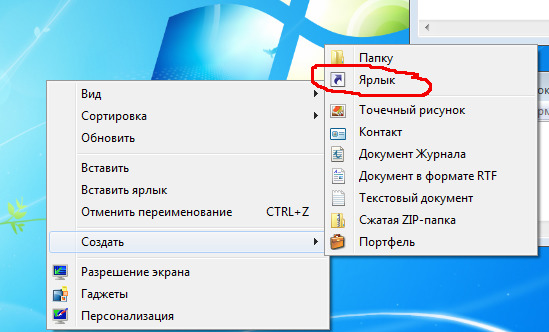
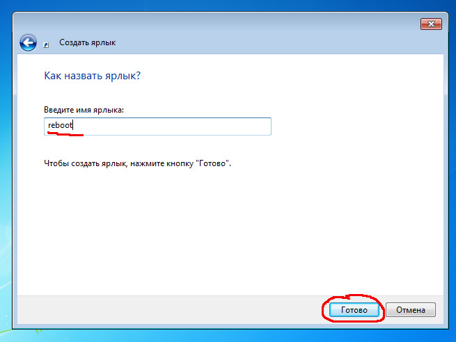
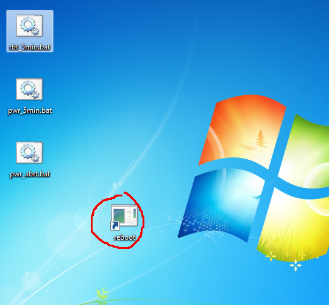
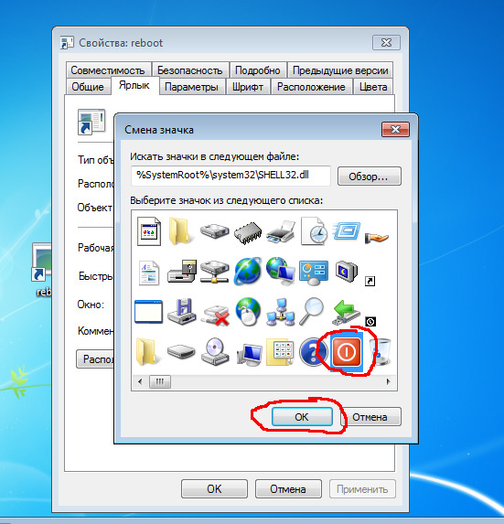
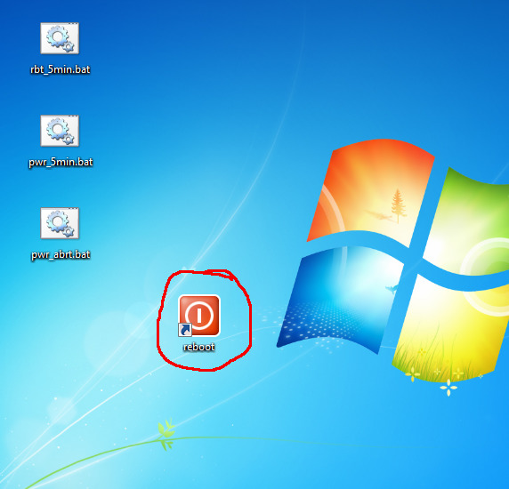
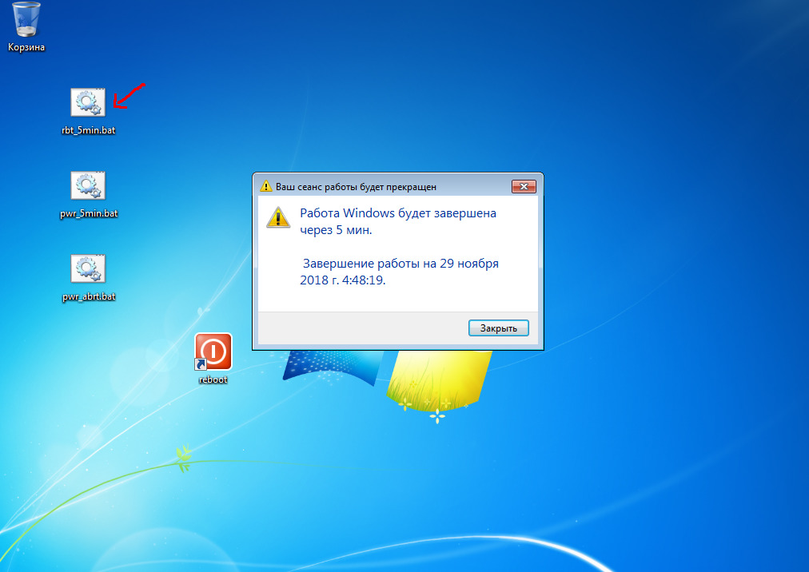
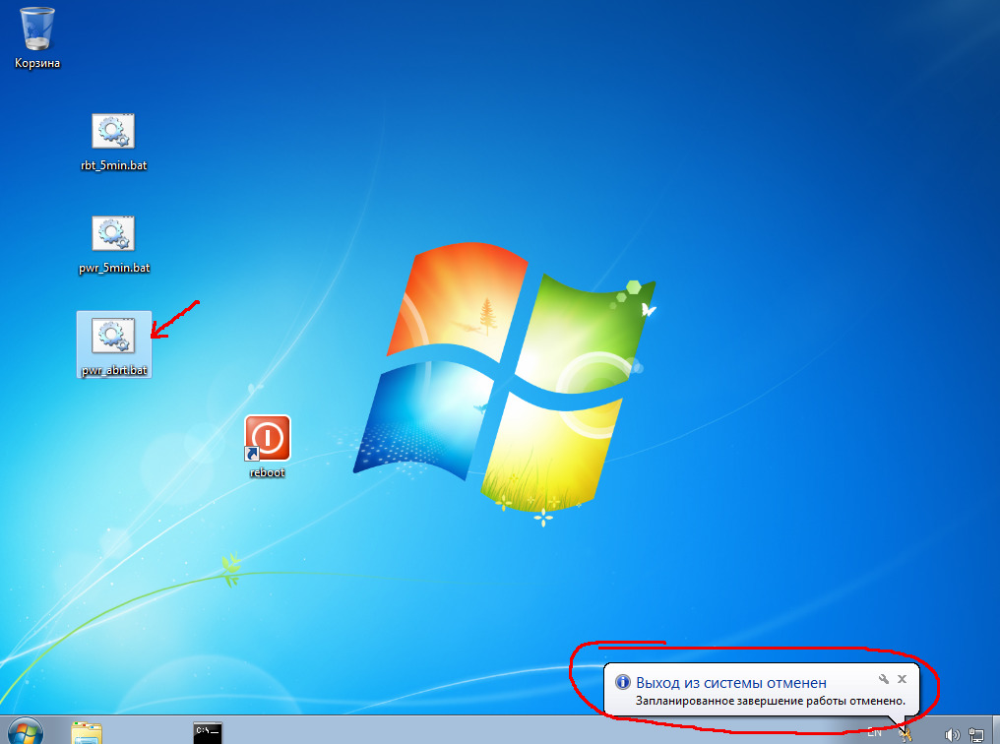

Отложенное выключение компьютера в ОС Windows
Воспользуемся стандартной командой командной строки Windows - shutdown.
Помощь по данной команде можно получить так:
bash shutdown /?

Рассмотрим 3 Batch-скрипта:
1. "rbt_5min.bat" - перезагружает через 5 минут
2. "pwr_5min.bat" - выключает через 5 минут
3. "pwr_abrt.bat" - отменяет перезагрузку/выключение
Двойной клик по скрипту запустит соответствующее действие.

Если вы не знаете, как создать такие скрипты, то взгляните на статью легковесный компилятор Си для Windows, в ней уже решался подобный вопрос.
Чтобы у команды выключения была иконка, можно сделать следующим образом:



затем правой кнопкой мыши на ярлыке:



если не нравится ни одна иконка внутри SHELL32.dll, можно порыться в
других исполняемых файлах (exe-файлах или dll-файлах) в поисках подходящей
иконки, или нарисовать с помощью графического редактора, сохранить её в
формате ico и выбрать.





больше статей на канале в Telegram assistpc
converted from README.md by using
markdown.lua